グラフエクスポート
ExpGraphs
概要
作成したグラフを出版などのために、簡単にエクスポートできます。
グラフのエクスポートは高度にカスタマイズ可能です。画像のサイズ、ファイル形式、およびカラーフォーマットなど、その他の詳細設定を指定できます。
学習する項目
- グラフのエクスポート設定を指定する方法
- プロジェクト内の指定されたグラフをエクスポートする方法
グラフをeps画像としてエクスポートする。
このチュートリアルは、下記のプロジェクトファイルに関連しています。
(C:\ProgramData\OriginLab\(version number)\Origin\Central\Graphing\Contour Plots - XYZ Contour.opju)ラーニングセンターを開き、等高線図プロットタイプを選択してから、XYZ等高線図のアイコンをダブルクリックして、このプロジェクトを開くこともできます。
- プロジェクトを開いた状態で、下図のグラフウィンドウをアクティブにします。
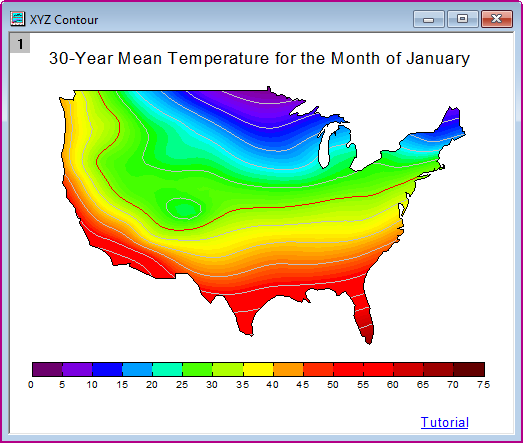
- メニューからファイル：グラフエクスポート：ダイアログを開くを選び、expGraph ダイアログを開きます。
- 自動プレビュー のチェックボックスにチェックを入れます。その後、グラフはダイアログの右側のパネルに一時的コピーを自動でプレビューします。
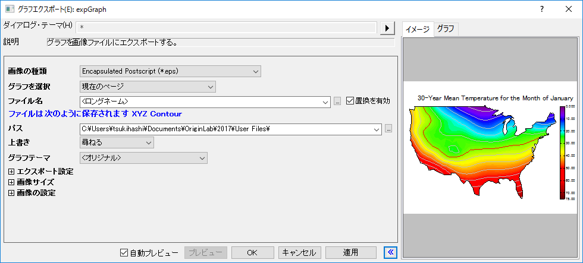
 | イメージタブのプレビューが空白になっている場合は、非常に大きなラスターイメージの角だけを表示している可能性があります。Origin 2019から、イメージタブ内で右クリックしてラスター画像やベクター画像をプレビューするためのズームレベルを選択できます。プレビューパネルのサイズ+画像タブのズームレベルを操作することで、グラフ全体を見ることができます。
|
- グラフをエクスポートするために次の設定を行います。
- ファイル名をMy Graphに編集します。
- エクスポート設定ノードを展開して、余白の制御ドロップダウンリストから境界を選択し、境界幅のクリップボックスに3と入力します。
- 画像サイズノードを展開して、幅に合わせるの自動チェックボックスをオフにし、幅を5に設定します。
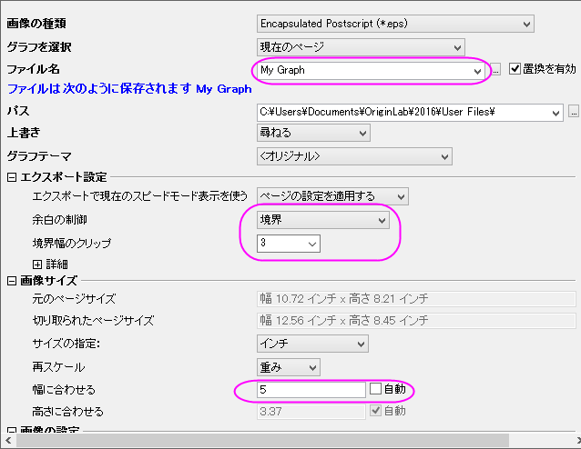
- ダイアログテーマの右側にある三角形のボタンをクリックします。ショートカットメニューから名前を付けて保存を選択します。名前を付けてテーマを保存 ダイアログが開きます。
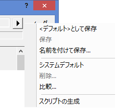
- テーマの名前を付けて保存ダイアログで、テーマ名としてMy EPS Exportを入力します。OKをクリックします。
- expGraphダイアログでOKボタンをクリックすると、User File フォルダにMy Graph.epsが作成されます。グラフのパスがメッセージログに表示されます。
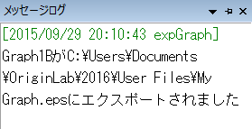
- 上の設定を使用してグラフのエクスポートを繰り返し、グラフエクスポートツールのフライアウトメニューでテーマMy EPS Exportを直接選択します。
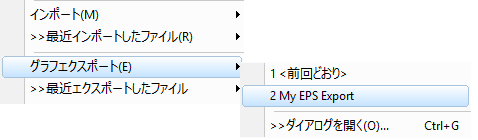
または、
expGraphダイアログのダイアログテーマの右にある右向き三角形ボタンをクリックします。ショートカットメニューからMy EPS Exportを選択します。そのテーマの設定がダイアログに表示されます。
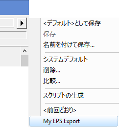
| 最後の方の操作で、エクスポート設定を外部のテーマファイルとして保存し、expGraph ダイアログのフライアウトメニューから保存したテーマを適用しました。Origin 2021以降、エクスポート設定はエクスポート実行時に自動的にグラフに保存されます。グラフをすぐにエクスポートしない場合は、ダイアログテーマメニューをクリックし、保存先<グラフ>を選択して設定を保存できます。
|
指定したグラフをエクスポートする
- サンプルフォルダ<Origin EXE folder>\Samples\GraphingにあるColumn and Bar.opjuサンプルプロジェクトファイルを開きます。
- プロジェクトエクスプローラで「Column_Plot_with_Baseline_Y=0.5」フォルダをクリックしてグラフウィンドウをアクティブにします。
- ファイル: グラフエクスポートを選択してexpGraphダイアログを開き、画像の種類にPortable Network Graphics(*.png)を選択します。
- グラフの選択のドロップダウンリストから指定を選択します。グラフページの編集ボックス右にあるブラウズ
 ボタンをクリックし、グラフブラウザダイアログを開きます。
ボタンをクリックし、グラフブラウザダイアログを開きます。
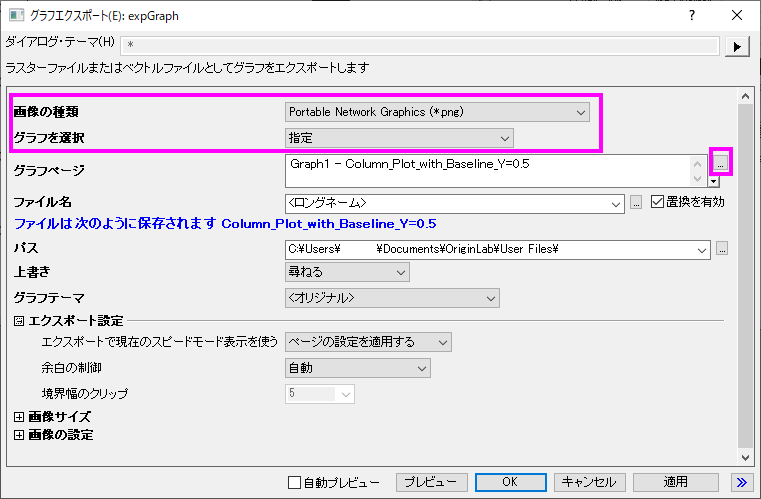
- グラフブラウザダイアログでは、このプロジェクトのすべてのグラフがダイアログの左パネルに表示されます。左のパネルでGraph8を選択し、プレビューパネルに表示します。
- ボタンをクリックして右のパネルに選択したデータセットを追加するか、左のパネルでそのデータセットをダブルクリックして右のパネルに追加します。
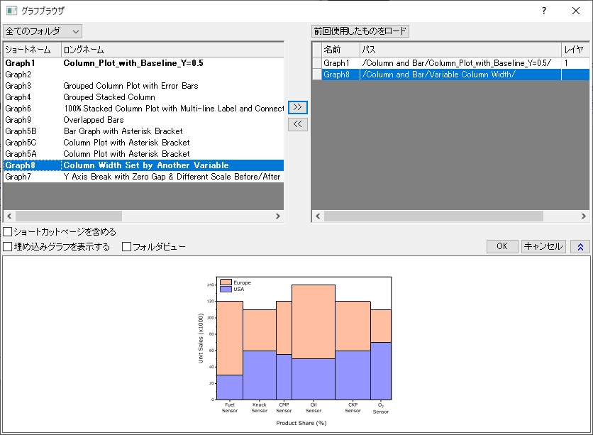
- OKボタンをクリックします。すると、グラフページボックスに指定されたグラフが表示されます。画像サイズブランチを開き、サイズの指定ドロップダウンリストからピクセルを選びます。また、幅に合わせるの自動チェックボックスからチェックを外して、幅を600に設定します。
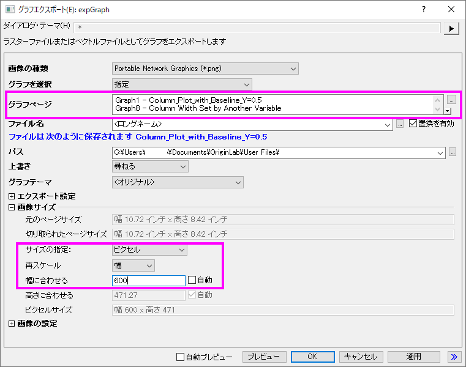
- expGraphダイアログでOKをクリックすると2つの画像が作成されます。グラフのパスがメッセージログに表示されます。
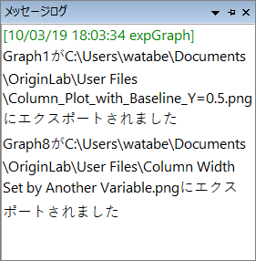